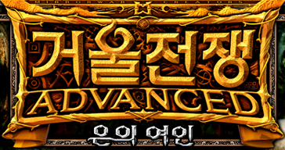

<!doctype html>
<html lang="ko">
<head>
<meta charset="utf-8">
<!-- 휴대폰: 확대·축소를 막고 노치 영역까지 화면을 쓴다 -->
<meta name="viewport" content="width=device-width, initial-scale=1, maximum-scale=1, user-scalable=no, viewport-fit=cover">
<meta name="mobile-web-app-capable" content="yes">
<meta name="apple-mobile-web-app-capable" content="yes">
<meta name="theme-color" content="#0b0d12">
<!-- 링크 미리보기 (카카오톡·메신저·SNS의 Open Graph). 그림은 절대 주소여야 한다 — tools/ogbuild.py 가 만든다. 주소가 바뀌면(다른 곳에 올리면) 여기 네 줄을 함께 고친다 -->
<meta property="og:type" content="website">
<meta property="og:title" content="거울전쟁 디펜스">
<meta property="og:description" content="원작 「거울전쟁 어드밴스드: 은의 여인」의 유닛과 마법으로 만든 팬 디펜스 게임. 해방부대를 소환해 악령군·흑마술파의 기지까지 밀고 들어가 무너뜨리세요.">
<meta property="og:url" content="https://owalsen.github.io/static/mirror-war/defense/">
<meta property="og:image" content="https://owalsen.github.io/static/mirror-war/sim/bg/og.jpg">
<meta property="og:image:width" content="1200">
<meta property="og:image:height" content="630">
<meta name="twitter:card" content="summary_large_image">
<meta name="description" content="원작 「거울전쟁 어드밴스드: 은의 여인」의 유닛과 마법으로 만든 팬 디펜스 게임. 해방부대를 소환해 악령군·흑마술파의 기지까지 밀고 들어가 무너뜨리세요.">
<title>거울전쟁 디펜스</title>
<style>
  /* 화면 전체를 캔버스 하나로 채운다. 스크롤·길게 누르기·글자 선택 같은 브라우저 기본 동작은 끈다 */
  html, body { margin: 0; height: 100%; background: #0b0d12; overflow: hidden; overscroll-behavior: none; }
  body { -webkit-user-select: none; user-select: none; -webkit-touch-callout: none; -webkit-tap-highlight-color: transparent; }
  #stage {
    /* 노치·홈 막대 자리(safe area)를 뺀 영역을 쓴다 — 가로로 들었을 때 버튼이 노치 밑에 깔리지 않게.
       게임은 이 영역의 크기를 보고 "게임 안 크기"와 가로/세로 배치를 정한다 (defense.js 의 _resize) */
    position: fixed;
    left: env(safe-area-inset-left, 0px); top: env(safe-area-inset-top, 0px);
    width: calc(100vw - env(safe-area-inset-left, 0px) - env(safe-area-inset-right, 0px));
    height: calc(100vh - env(safe-area-inset-top, 0px) - env(safe-area-inset-bottom, 0px));
    height: calc(100dvh - env(safe-area-inset-top, 0px) - env(safe-area-inset-bottom, 0px));
    object-fit: contain;            /* 게임 화면 비율을 지킨 채 가장 크게 (남는 곳은 검은 여백) */
    image-rendering: crisp-edges;
    image-rendering: pixelated;     /* 도트 그림을 뭉개지 않고 키운다 */
    touch-action: none;             /* 터치를 스크롤·확대로 해석하지 않게 */
    display: block; background: #0b0d12;
  }

  /* ── 넓은 화면(PC·가로 화면)의 꾸밈 ──
     게임은 세로 전용이라 넓은 화면에서는 가운데에 세로 띠로 서고 양옆이 빈다. 그 자리에 원작 그림을 깔고(#bg — 흐리고 어둡게, 몇 장이 천천히 바뀐다),
     게임 띠에 테를 두르고(#frame), 양옆에 게임 소개(#side-l)와 영웅 초상화(#side-r)를 둔다. (단축키 안내는 뺐다 — 모바일 게임이라 필요 없다는 사용자 판단) 좁은 화면(휴대폰 세로)에서는 전부 숨기고 그림도 받지 않는다.
     --gw = 게임 띠의 너비 (게임 안 크기 390×844 를 화면 높이에 맞춘 것 — defense.js CONFIG.SCREEN.refW/refH 와 같아야 한다) */
  :root { --gw: calc(100vh * 390 / 844); --gw: calc(100dvh * 390 / 844); --side: calc((100vw - var(--gw)) / 2); }
  #bg, #frame, .side { display: none; position: fixed; pointer-events: none; }
  @media (min-aspect-ratio: 1/1) {
    html, body { background: #07080b; }
    #stage { background: transparent; z-index: 1; }
    #bg { display: block; inset: 0; z-index: 0; overflow: hidden; }
    #bg i { position: absolute; inset: -40px; background-size: cover; background-position: center; filter: blur(4px) saturate(1.2) brightness(.95); opacity: 0; transition: opacity 2.4s ease; }
    #bg i.on { opacity: 1; }
    #bg::after { content: ''; position: absolute; inset: 0; background: radial-gradient(ellipse at center, rgba(7,8,11,.18) 35%, rgba(7,8,11,.6) 100%); }
    #frame { display: block; z-index: 2; top: 0; bottom: 0; left: calc(50% - var(--gw) / 2 - 3px); width: calc(var(--gw) + 6px); box-sizing: border-box;
      border-left: 3px solid #6b5326; border-right: 3px solid #6b5326; box-shadow: 0 0 0 1px #1a1408, 0 0 46px 10px rgba(0,0,0,.8), inset 0 0 0 1px rgba(255,224,140,.25); }
  }
  @media (min-aspect-ratio: 5/4) {
    .side { display: flex; flex-direction: column; justify-content: center; z-index: 2; top: 0; bottom: 0; width: min(400px, calc(var(--side) - 64px)); color: #dfe6f5;
      font: 14px/1.6 "IBM Plex Sans KR", "Apple SD Gothic Neo", "Malgun Gothic", sans-serif; word-break: keep-all; text-shadow: 0 1px 3px rgba(0,0,0,.9); }
    #side-l { right: calc(50% + var(--gw) / 2 + 32px); align-items: flex-end; text-align: right; }
    #side-r { left: calc(50% + var(--gw) / 2 + 32px); }
    .side img.logo { width: min(100%, 364px); image-rendering: auto; filter: drop-shadow(0 6px 18px rgba(0,0,0,.8)); border-radius: 4px; }
    .side h1 { margin: 18px 0 2px; font-size: 30px; line-height: 1.2; color: #ffd36e; letter-spacing: .02em; }
    .side h2 { margin: 0 0 10px; font-size: 13px; font-weight: 600; color: #ffe9b0; letter-spacing: .28em; text-transform: uppercase; opacity: .8; }
    .side p { margin: 10px 0 0; }
    .side ul { list-style: none; margin: 14px 0 0; padding: 0; }
    .side li { margin: 7px 0; padding: 7px 12px; background: linear-gradient(90deg, rgba(12,9,5,.0), rgba(12,9,5,.62)); border-right: 2px solid #a8823a; }
    #side-r li { background: linear-gradient(270deg, rgba(12,9,5,.0), rgba(12,9,5,.62)); border-right: 0; border-left: 2px solid #a8823a; }
    .side li b { color: #ffd36e; font-weight: 700; }
    .heroes { --w: min(104px, calc((min(400px, var(--side) - 64px) - 20px) / 3)); display: grid; grid-template-columns: repeat(3, var(--w)); gap: 10px; margin-top: 16px; }
    .heroes figure { margin: 0; background: rgba(12,9,5,.72); border: 1px solid #6b5326; box-shadow: 0 0 0 1px #1a1408, 0 6px 14px rgba(0,0,0,.6), inset 0 0 0 1px rgba(255,224,140,.18); }
    .heroes figure:nth-child(3n+2) { transform: translateY(12px); }
    .heroes i { display: block; width: var(--w); height: calc(var(--w) * 4 / 3); background-size: calc(var(--w) * 12) auto; background-position: calc(var(--c) * var(--w) * -1) calc(var(--r) * var(--w) * -4 / 3); background-repeat: no-repeat; }
    .wide .heroes i { background-image: url(../sim/portraits.png); }
    .heroes figcaption { padding: 4px 2px 5px; text-align: center; font-size: 10px; line-height: 1.35; color: #9aa3b8; white-space: nowrap; overflow: hidden; }
    .heroes figcaption b { display: block; font-size: 11px; color: #ffe9b0; }
    .side small { display: block; margin-top: 22px; font-size: 11px; line-height: 1.6; color: #9aa3b8; }
  }
  @media (min-aspect-ratio: 5/4) and (max-height: 620px) { .side h1 { font-size: 22px; } .side { font-size: 12px; } .side li { margin: 4px 0; padding: 4px 10px; } .side img.logo { width: 220px; } .side small { margin-top: 10px; } .heroes { --w: 68px; gap: 6px; } }
</style>
</head>
<body>
<!-- 넓은 화면의 꾸밈 (위 CSS 설명 참고). 그림은 원작 게임 안의 것: tools/bgbuild.js → sim/bg/ -->
<div id="bg" aria-hidden="true"><i></i><i></i></div>
<aside class="side" id="side-l">
  
  <h1>거울전쟁 디펜스</h1>
  <h2>Mirror War Defense</h2>
  <p>원작 「거울전쟁 어드밴스드: 은의 여인」의 유닛과 마법, 그림과 소리로 만든 팬 디펜스 게임입니다.</p>
  <ul>
    <li><b>해방부대 25종</b>을 소환해 적 기지까지 밀고 들어갑니다</li>
    <li><b>스테이지 3개</b> — 악령군·흑마술파의 기지를 무너뜨립니다</li>
    <li>유닛 수치·상성·마법은 <b>원작 그대로</b></li>
    <li>레벨이 오르면 <b>카드</b>를 고르고 <b>영웅</b>을 부릅니다</li>
  </ul>
</aside>
<aside class="side" id="side-r">
  <h2>Heroes</h2>
  <p>레벨이 오르면 원작의 영웅들이 카드로 찾아옵니다.</p>
  <!-- 영웅 초상화: 게임이 쓰는 portraits.png(원작 초상화 120×160, 12열)에서 잘라 보여 준다. --c 열, --r 행 = 초상화 번호 % 12, ÷ 12 (defense.js CONFIG.GROW.heroes 의 영웅들) -->
  <div class="heroes">
    <figure><i style="--c:2;--r:8"></i><figcaption><b>파인트 롤</b>전사</figcaption></figure>
    <figure><i style="--c:2;--r:7"></i><figcaption><b>레디쉬 앤</b>정령사</figcaption></figure>
    <figure><i style="--c:4;--r:7"></i><figcaption><b>벨리프 쇼링</b>성기사</figcaption></figure>
    <figure><i style="--c:11;--r:6"></i><figcaption><b>다인 바운터</b>창검사</figcaption></figure>
    <figure><i style="--c:4;--r:1"></i><figcaption><b>가웬 포라튼</b>마법기사</figcaption></figure>
    <figure><i style="--c:0;--r:0"></i><figcaption><b>스카이 러너</b>전사</figcaption></figure>
    <figure><i style="--c:5;--r:1"></i><figcaption><b>크리스 리디아</b>성령사</figcaption></figure>
    <figure><i style="--c:11;--r:1"></i><figcaption><b>폴로운</b>엔트</figcaption></figure>
    <figure><i style="--c:10;--r:1"></i><figcaption><b>네메시스 인트루더</b>엔젤 나이트</figcaption></figure>
  </div>
  <small>이 게임은 원작 「거울전쟁」에 대한 팬심으로 만든 비영리 팬 게임입니다.<br>원작 자산의 저작권은 제작사 L&amp;K Logic Korea에 있으며, 요청이 있으면 즉시 내리겠습니다.</small>
</aside>
<div id="frame" aria-hidden="true"></div>
<canvas id="stage" width="800" height="450" aria-label="거울전쟁 디펜스 게임 화면"></canvas>

<!-- 원소스 멀티유즈: 전장 시뮬(../index.html)과 같은 데이터(sim/)와 엔진(mw/)을 그대로 쓴다.
     이 게임만의 코드는 맨 아래 mw/modes/defense.js 한 파일이다. 세로 전용(가로로 들어도 배치가 바뀌지 않고 가운데에 세워진다). -->
<script src="../sim/sizes.js"></script>
<script src="../sim/data.js"></script>
<script src="../sim/defense.js"></script>
<script src="../sim/hpbar.js"></script>
<script src="../mw/core/base.js"></script>
<script src="../mw/core/gamemap.js"></script>
<script src="../mw/core/unit.js"></script>
<script src="../mw/core/rules.js"></script>
<script src="../mw/render/assets.js"></script>
<script src="../mw/render/terrain.js"></script>
<script src="../mw/ui/hud.js"></script>
<script src="../mw/ui/sfx.js"></script>
<script src="../mw/ui/unitdesc.js"></script>
<script src="../mw/modes/defense.js"></script>
<script>
  // 게임 시작. window.__defense 로 콘솔에서 상태를 들여다볼 수 있다 (예: __defense.mana = 200)
  window.__defense = new MWE.DefenseGame(document.getElementById('stage'), window.MW, { base: '../sim/' });

  // 넓은 화면의 배경: 넓을 때만 그림을 받는다(휴대폰은 받지 않는다). 두 겹을 번갈아 켜서 14초마다 다음 그림으로 서서히 바뀐다
  (function () {
    var BG = ['bg1', 'bg2', 'bg3', 'bg4', 'bg5'], mq = window.matchMedia ? window.matchMedia('(min-aspect-ratio: 1/1)') : null, L = document.querySelectorAll('#bg i'), k = 0, cur = 0, timer = null;
    if (!mq || !L.length) return;
    var show = function () { var el = L[cur], src = '../sim/bg/' + BG[k % BG.length] + '.jpg', im = new Image();
      im.onload = function () { el.style.backgroundImage = 'url(' + src + ')'; el.className = 'on'; L[1 - cur].className = ''; cur = 1 - cur; }; im.src = src; k++; };
    var on = function () { if (!mq.matches) { if (timer) { clearInterval(timer); timer = null; } return; }
      document.documentElement.classList.add('wide');   // 초상화 시트도 넓을 때만 건다
      Array.prototype.forEach.call(document.querySelectorAll('img[data-src]'), function (im) { im.src = im.getAttribute('data-src'); im.removeAttribute('data-src'); });
      if (!timer) { show(); timer = setInterval(show, 14000); } };
    on(); if (mq.addEventListener) mq.addEventListener('change', on); else if (mq.addListener) mq.addListener(on);
  })();
</script>
</body>
</html>
